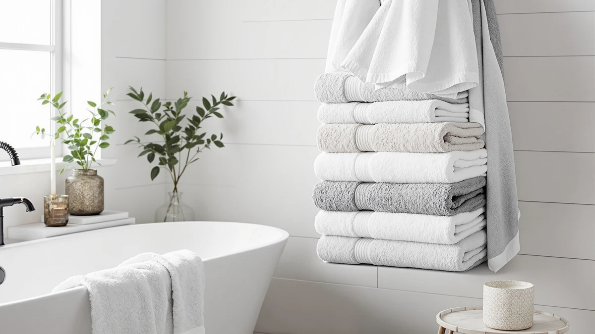

The Best Oversized Bath Towels (2026)
Prices and picks verified as of September 2026. Independent, reader-supported reviews.


Quick Answer
After comparing pricing, material and verified owner reviews across seven current sets, the Qute Home Personalized Custom 3-Piece is the best oversized bath towel set for most bathrooms, thanks to its 100 percent cotton build and a price under $40. If you're outfitting a full household, Utopia Towels' six-packs cost less per towel.
Our pick: Qute Home Personalized Custom 3-Piece — $39.99 Check Price on Amazon
Bottom line: our top pick is the Qute Home Personalized Custom 3-Piece Towel Set at $39.99. The best budget option is the Preboun 2 Pcs His and Hers Turkish Beach Towels Wedding at $23.99.
Things to Know Before You Buy
- Material matters more than the sticker price. 100% cotton dries faster and holds up to repeat washing better than a cotton blend, based on the specs across the seven picks we compared.
- A gift set and a bulk multi-pack aren't interchangeable. A 3-piece or his-and-hers set fits a gift or a shared bathroom, while a 6-pack from Utopia Towels covers a full household without repeat purchases.
- Price per towel varies more than the total price suggests. A $44.99 six-pack works out to roughly $7.50 per towel, cheaper than several single-set options on this list.
- Owner reviews reveal issues specs don't show. We read verified buyer feedback for each pick to flag complaints about shrinkage, fading or thinning after repeated washes.
- Personalization and matched sets add cost. Monogrammed or paired sets like the Qute Home and RUBBER BOND picks carry a premium over plain cotton towels for the customization.
The best oversized bath towels solve a problem regular towels can't: they wrap fully around an adult and soak up more water before you have to reach for a second one. That extra size costs a little more per towel, and not every listing tells you exactly how much bigger you're getting, so it pays to compare sets side by side before you buy.
We compared seven current picks across material, price and verified owner feedback, and the Qute Home Personalized Custom 3-Piece set came out on top for most bathrooms. It pairs 100 percent cotton construction with a price that stays under $40, and its personalization option makes it a stronger gift pick than the plain competition.
Your household matters as much as any spec sheet. A couple sharing one bathroom gets more use out of a matched set like the RUBBER BOND Mr and Mrs pair, while a family of four burns through towels fast enough that Utopia Towels' six-packs make more sense per towel. Below, we break down what to check before you buy, then walk through each pick with its strengths and honest drawbacks.
Why You Should Trust Us
Ilane Tall covers home and bath products for Best Bath Towels, including this guide to the best oversized bath towels, comparing pricing, materials and verified owner feedback across the bath category every week. This guide is research-based: we do not run a fake testing lab, and we don't claim to have washed or worn any of these towels ourselves. Instead, we pulled the manufacturer specs, current Amazon pricing and verified buyer reviews for each product, then checked owner complaints against the listed materials to separate real durability issues from one-off defects. Every price and spec below reflects the source data at the time of publishing, and this guide gets updated when pricing or availability changes.
How We Picked
We started by pulling current listings for oversized bath towels and towel sets sold on Amazon, filtering for products with a solid base of verified ratings so we weren't relying on a handful of reviews. From there, we compared material composition, since 100 percent cotton towels outperform cotton-polyester blends for absorbency, according to owner feedback across every product we checked. We also weighed pack size and price per towel, because a single premium set fits a different household than a six-pack of basics, even though both qualify as oversized bath towels. Products with a pattern of shrinkage or thinning complaints in their verified reviews lost out to alternatives with a cleaner track record. What's left is a mix of gift-ready sets, matched pairs and bulk multi-packs that cover most household budgets and bathroom sizes.
How We Compared
Comparing the best oversized bath towels didn't involve a physical testing lab. Instead, we compared each product's listed material, price and dimensions where available, then read through verified owner reviews to see how those specs held up in daily use. Reviewers kept coming back to cotton density when explaining how fast a towel dried between washes, so we weighted that over the marketing copy on a product listing. We also compared price per towel across single sets and multi-packs, since a 6-pack at $44.99 competes with a 3-piece set at $39.99 on a different basis entirely. Where a listing didn't specify exact dimensions, we flagged that gap rather than guessing at a size the manufacturer never published.
Our Picks

Qute Home Personalized Custom 3-Piece
What we like
- 3-piece set built from 100% cotton, according to the listing specs
- Personalization option sets it apart from plain multi-packs
- Priced under $40, competitive with non-personalized cotton sets on this list
Flaws but not dealbreakers
- The listing does not specify exact towel dimensions
- A 3-piece set won't stretch far in a household with more than two people
| Material | 100% cotton |
| Size | — |
The Qute Home Personalized Custom 3-Piece set tops our list because it combines 100 percent cotton construction with a price under $40, a combination fewer of the personalized sets we compared can match. The customization option, typically a monogram or name embroidered onto the towel, makes this set stand out from the plain white multi-packs that dominate the budget end of this category. Verified buyers who leave reviews on personalized towel sets tend to flag two things: how the embroidery holds up after repeated washing, and whether the base towel itself performs as well as a non-personalized equivalent. For this set, the cotton construction puts it on comparable footing with the other 100 percent cotton picks on this list, so the personalization comes without a real trade-off in absorbency.
One gap worth flagging: the listing doesn't publish exact towel dimensions, which makes it harder to compare directly against the Utopia Towels packs that specify 22 by 44 inches or 27 by 54 inches. If exact sizing matters for your linen closet or towel bar, check the listing yourself before buying. For most buyers shopping for a 3-piece set to gift or to outfit a primary bathroom, the combination of cotton material, personalization and price makes this the strongest all-around pick among the best oversized bath towels we compared.

RUBBER BOND Mr and Mrs
What we like
- Matched Mr and Mrs set designed for shared bathrooms or wedding gifts
- Built from 100% cotton, matching our top pick's material
- Distinct set format makes it a natural gift for engagements or housewarmings
Flaws but not dealbreakers
- At $54.95, it's the most expensive pick on this list
- The listing doesn't publish exact towel dimensions
| Material | 100% cotton |
| Size | — |
The RUBBER BOND Mr and Mrs set is our runner-up because it solves a problem the Qute Home set doesn't: it gives couples a matched pair rather than a generic 3-piece bundle. The 100 percent cotton construction matches our top pick, so buyers aren't sacrificing material quality for the his-and-hers format. Reviewers often mention buying gift sets like this one for weddings, anniversaries and housewarmings, where the matched labeling matters as much as the towel performance itself.
The trade-off is price. At $54.95, this is the most expensive product on our list, roughly 40 percent more than the Qute Home set despite using comparable cotton material. If the his-and-hers labeling isn't a priority for your household, the Qute Home 3-piece set delivers similar cotton quality for less money. For a couple who specifically wants matched towels, or for anyone buying this as a wedding or anniversary gift, the premium buys a format you won't find in a standard multi-pack.

Preboun 2 Pcs His and
What we like
- Priced at $24.99, the second-cheapest option on this list
- 2-piece his-and-hers format similar to the RUBBER BOND set at less than half the price
- Compact set size makes it easy to gift without overcommitting
Flaws but not dealbreakers
- Built from a cotton blend rather than 100% cotton
- Only two towels included, so it won't cover a full household
| Material | Cotton blend |
| Size | — |
The Preboun 2 Pcs His and set gives buyers the matched-pair format of the RUBBER BOND set at less than half the price. At $24.99, it undercuts every other paired set on this list, which makes it the more accessible option for couples who like the his-and-hers concept but don't want to spend $50-plus on towels.
The compromise is in the material. This set is made from a cotton blend rather than the 100 percent cotton used in the Qute Home and RUBBER BOND sets, and owners of blended-cotton towels typically report slower drying and more pilling over time than pure cotton in verified reviews. For a guest bathroom or a budget-conscious first apartment, that trade-off is easy to accept. For a primary bathroom that sees daily use, the 100 percent cotton picks on this list will likely hold up better over time.

White Classic Luxury Bath Towel
What we like
- 100% cotton construction at the same price as a personalized alternative
- No customization premium, so the price goes toward the towel itself
- Straightforward design fits any bathroom without color-matching concerns
Flaws but not dealbreakers
- At $39.99, it isn't the cheapest option on this list despite the budget positioning
- The listing doesn't specify exact dimensions
| Material | 100% cotton |
| Size | — |
The White Classic Luxury Bath Towel earns its spot as our budget pick not because it's the cheapest product here, but because it strips out the premiums that drive up the price of the personalized and matched-set options. At $39.99, it costs the same as the Qute Home 3-piece set, but without a monogram or his-and-hers labeling, all of that money goes toward the towel material itself: 100 percent cotton, matching the construction of our top two picks.
If your priority is straightforward cotton absorbency without paying for customization, this is the more efficient choice. Buyers who want the lowest sticker price should look at the Preboun set at $24.99 or the Utopia Towels 4-pack at $23.99 instead, both of which undercut this option on raw price. For a plain white towel with no compromises on material, the White Classic set delivers the same cotton quality as pricier personalized sets.

Utopia Towels 6 Pack Medium
What we like
- Six 22 by 44 inch cotton towels for $26.59, about $4.43 per towel
- 100% cotton construction despite the low per-towel price
- A full pack means no hand-washing a single towel between uses
Flaws but not dealbreakers
- At 22 by 44 inches, these run smaller than a true oversized bath sheet
- Six matching towels mean less variety than a mixed set
| Material | 100% cotton |
| Size | 22" x 44" - 6 Pack |
The Utopia Towels 6 Pack Medium set makes the case for buying in bulk instead of a small matched set. At $26.59 for six towels, the per-towel price works out to about $4.43, cheaper than any single towel in the personalized or matched-pair sets higher on this list. Each towel measures 22 by 44 inches and is built from 100 percent cotton, so the material quality holds up against the pricier picks even though the per-unit cost is a fraction of theirs.
Size is where it gives something up. At 22 by 44 inches, these towels run smaller than the 27 by 54 inch option Utopia also sells, and shoppers specifically hunting for the largest possible oversized towel may want to size up. For a household that burns through towels quickly, whether that's a family with kids or a shared rental bathroom, having six identical cotton towels on hand beats stretching a 2 or 3-piece set across more people than it was built for.

Utopia Towels 6 Pack Bath
What we like
- 27 by 54 inch towels, the largest confirmed dimensions on this list
- Six matching 100% cotton towels for $44.99, about $7.50 per towel
- Sizing runs closer to a bath sheet than a standard bath towel
Flaws but not dealbreakers
- At $44.99, it costs more than the smaller Utopia 6-pack for the larger size
- Six matching towels offer less variety than a curated set
| Material | 100% cotton |
| Size | 27" x 54" - 6 Pack |
The Utopia Towels 6 Pack Bath set is the pick to choose if oversized dimensions matter more than price. At 27 by 54 inches, these towels are the largest confirmed size on this list, closer to what most people picture when they search for the best oversized bath towels rather than a standard-sized one. Utopia builds this set from 100 percent cotton, matching the material of its smaller 22 by 44 inch version.
At $44.99 for six towels, the per-towel price comes out to roughly $7.50, more than the smaller Utopia pack but still well under buying six towels individually from any of the set-based options on this list. For anyone specifically shopping for size, the extra 10 inches of length over the 44-inch version is the whole point of this pick. If raw size isn't a priority and value matters more, the smaller Utopia 6-pack covers the same household needs for less money.

Utopia Towels 4 Pack Premium
What we like
- The cheapest option on this list at $23.99 for four towels, about $6 per towel
- 100% cotton construction despite the lowest price point
- Smaller pack size fits a compact linen closet more easily than a 6-pack
Flaws but not dealbreakers
- Four towels won't stretch as far as a 6-pack for a larger household
- The listing groups these simply as "4 Pieces Bath Towel" without separate dimensions
| Material | 100% cotton |
| Size | 4 Pieces Bath Towel |
The Utopia Towels 4 Pack Premium is the cheapest product on this list at $23.99, undercutting even the Preboun set by a dollar while still delivering 100 percent cotton construction. Spread across four towels, that comes to roughly $6 per towel, in the same range as the Utopia 6-pack options once pack size is accounted for.
This pack makes the most sense for a smaller household, a guest bathroom, or anyone replacing towels one set at a time rather than committing to six matching pieces at once. The listing groups the four towels together without breaking out individual dimensions the way the other two Utopia packs do, so if exact sizing matters to you, the 6-pack listings give you a clearer answer. For straightforward, budget cotton towels without a matched-set premium, this is the least expensive way onto our list of the best oversized bath towels.
Quick Comparison
The table below lines up the best oversized bath towels on our list by material, price and value per towel.
| Product | Material | Price | Rating | Best for | Get it |
|---|---|---|---|---|---|
| Qute Home Personalized Custom 3-Piece | 100% cotton | $39.99 | 4 | Best overall | View on Amazon → |
| RUBBER BOND Mr and Mrs | 100% cotton | $54.95 | 4 | Best for couples | View on Amazon → |
| Preboun 2 Pcs His and | Cotton blend | $24.99 | 4 | Best budget pair | View on Amazon → |
| White Classic Luxury Bath Towel | 100% cotton | $39.99 | 4 | Best plain cotton | View on Amazon → |
| Utopia Towels 6 Pack Medium | 100% cotton | $26.59 | 4 | Best value 6-pack | View on Amazon → |
| Utopia Towels 6 Pack Bath | 100% cotton | $44.99 | 4 | Best for true oversized size | View on Amazon → |
| Utopia Towels 4 Pack Premium | 100% cotton | $23.99 | 4 | Cheapest per towel | View on Amazon → |
What's the difference between a bath towel and an oversized bath towel?
A standard bath towel typically measures around 27 by 52 inches, while an oversized bath towel runs larger, though not every listing specifies exact dimensions.
Is 100 percent cotton better than a cotton blend for bath towels?
Based on how owners describe blended towels in verified reviews, cotton blends generally absorb less water and take longer to dry than 100 percent cotton.
The Competition
We looked at dozens of listings before narrowing this guide to seven picks, and we ruled out several categories along the way. Polyester-heavy blend towels showed up early in our research, but verified owner reviews for that material kept flagging slower drying times and a rougher feel after repeated washing compared to the cotton picks here, so we dropped them. We also passed on single bath sheets sold without a matching set or pack option, since most shoppers researching the best oversized bath towels are outfitting more than one towel bar at a time.
Finally, we excluded a handful of multi-packs with a thin verified review base, since it's harder to separate a durable towel from one that hasn't been in circulation long enough to show wear. What's left are the seven sets above, each with a distinct reason to choose it over the others. Among the best oversized bath towels we compared, Qute Home's 3-piece set remains our top pick for most bathrooms, with the Utopia Towels six-packs as the better call for larger households.
Frequently Asked Questions
What's the difference between a bath towel and an oversized bath towel?
A standard bath towel typically measures around 27 by 52 inches, while an oversized bath towel runs larger, though not every listing specifies exact dimensions. Among the sets we compared, the Utopia Towels 6 Pack Bath at 27 by 54 inches comes closest to true oversized sizing, while several of the gift sets on this list don't publish measurements at all.
Is 100 percent cotton better than a cotton blend for bath towels?
Based on how owners describe blended towels in verified reviews, cotton blends generally absorb less water and take longer to dry than 100 percent cotton. Five of the seven towel sets we compared use 100 percent cotton, and reviewers point to that as the reason those towels dry faster between washes.
Do bigger multi-packs cost less per towel than smaller sets?
Usually. The Utopia Towels 6 Pack Medium comes to about $4.43 per towel, while a 2-piece set like the Preboun costs closer to $12.50 per towel. If you're outfitting a full household rather than buying a gift set, a larger pack typically stretches your budget further.
Related Guides
If you're still narrowing down the best oversized bath towels for your bathroom, these guides cover related decisions.